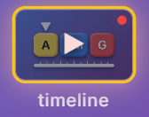
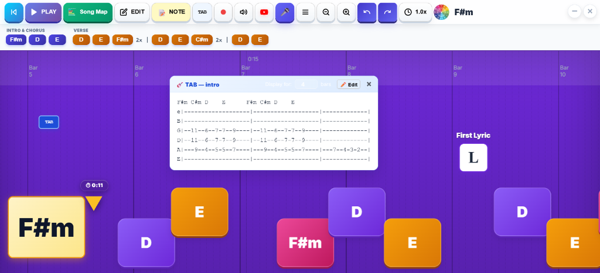
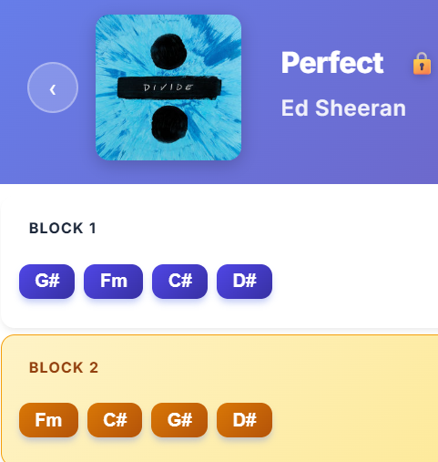
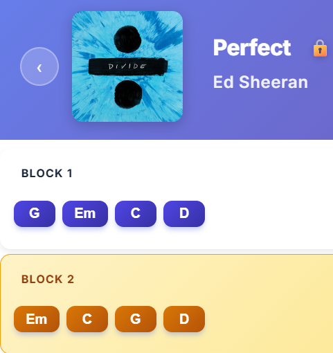

🚧UNDER CONSTRUCTION — Deze gitaarlessen zijn momenteel in ontwikkeling (alleen zichtbaar voor admins).
Beginner lessen
Stap-voor-stap gitaar leren spelen: van noten op de hals en powerchords tot basisakkoorden, capo, barré-akkoorden en Eb-stemming.
Les 1 van 9
Kies een les om te beginnen
Krijg gitaarakkoorden stap-voor-stap onder de knie. Kies een les hieronder om te oefenen. Zodra je een paar akkoorden kunt spelen kun je aan de slag met de liedjes.
0 van 9 Lessen Voltooid0%
🎸Les 1
Noten op de hals
Een paar noten die je echt moet weten & de 6 snaren.
⚡Les 2
Power Chords
Pop & Rock basis: 5th chords op de lage E en A snaren.
🧷Les 3
Spelen met CAPO
Transponeren zonder nieuwe akkoordgrepen te leren.
🎵Les 4
C, G, D, Am & Em
De meest gebruikte open basisakkoorden voor popnummers.
🎶Les 5
D, A en E Majeur
Open Majeur akkoorden & vrolijke pop-progressies.
🎩Les 6
Een Blues Schema
Het klassieke 12-maten bluesschema in E & A.
💪Les 7
F en F# Barré
Wijsvinger als menselijke capo: E-vorm barré-akkoorden.
🏆Les 8
Bm en B Barré
Wijsvinger als menselijke capo: A-vorm barré-akkoorden.
🎸Les 9
Eb Stemming
Halve toon lager stemmen (Half-step down tuning).
Les 1Een paar noten die je echt moet weten
Noten op de hals als basis voor de akkoorden
Voordat je akkoorden leert, is het belangrijk om te begrijpen hoe noten over de 6 snaren van de gitaarhals zijn verdeeld. Dit helpt je straks om barré-akkoorden en powerchords supersnel te vinden.
💡 Hoe werken de noten op de gitaarhals?
De standaard stemming van een 6-snarige gitaar is E - A - D - G - B - e (van laag naar hoog).
Elke fret omhoog is een halve toonafstand (semitoon). Tussen de noten B & C en E & F zit géén kruis (#) of mol (b). Een noot waar een # achter staat noem je is en een noot waar een b achter staat noem je es. Dus G# spreek je uit als Gis en Bb spreek je uit als Bes.
Toonladdervolgorde op de E-snaar: E (los) → F (1e fret) → F# → G (3e fret) → G# → A (5e fret) → A# → B (7e fret) → C (8e fret) → C# → D (10e fret) → D# → E (12e fret).
Visualisatie van de 6-Snarige Horizontale Gitaarhals
🙈Hals-diagram is verborgen voor de test. Klik hier om het te tonen.
Het lijkt nu wat veel om gelijk te onthouden, maar zorg dat je het vooral BEGRIJPT. Begin bij de namen van de snaren en vervolgens de G en de C. De rest kun je dan hieruit afleiden. Als we dan straks met de eerste akkoorden beginnen snap jij waar de laagste noot van het akkoord zit en waar de naam van het akkoord vandaan komt!
Hier volgt een korte oefening om de noten even in je systeem te krijgen. De naam van de 6 snaren en de F, G, B en C. Dat is voor nu voldoende. Succes!
🎯
Notentest: Overhoor jezelf!
Vraag 1 van 10
Open Snaren
Welke noot is de open 6e snaar (de dikste snaar)?
🏆
Geweldig gedaan!
Score: 10 / 10 (100%)
Je kent de open snaren en noten op de hals uitstekend!
✓
Markeer als voltooid
Les 2Pop & Rock Basis
Power Chords (5th Chords)
Powerchords zijn de basis van bijna alle rock-, pop- en punkmuziek. Ze bestaan uit slechts 2 (of 3) snaren: de grondtoon en de kwint. Moeilijke namen? Zie ‘grondtoon’ als de naam van het akkoord. Kwint wil zeggen 5 toonladder-stapjes vanaf de grondtoon. Dus bij een C powerchord is het C - d - e - f - G. Een C en een G dus. Geen andere noten. Dat geeft dit akkoord een erg dominant / stevig karakter.
💡 Waarom Powerchords zo krachtig zijn
Wat een Powerchord zo krachtig en handig maakt is dat je precies dezelfde greep over het hele fretboard kan verschuiven! Waar andere akkoorden bijna allemaal een andere vorm hebben is dat bij de powerchords niet zo. Leer één greep en ga los!
Greepvorm op de lage E-snaar: Grondtoon op de E-snaar (met je indexvinger), 2 frets hoger op de A-snaar (met je ringvinger of pink).
Powerchords op de 6e snaar (Lage E-snaar)
Klik op een powerchord hieronder:
Rood = Grondtoon (Wijsvinger)
Blauw = Kwint / 5th (Ringvinger)
Roze = Octaaf (Optioneel met pink)
×Niet aanslaan / dempen
💡 Powerchords vanaf de 5e snaar (A-snaar)
Waarom zou je powerchords vanaf de 5e snaar spelen? Veel powerchords kun je zowel op de 6e (lage E) als op de 5e (A) snaar spelen. Dit is ontzettend handig bij het overspringen tussen akkoorden in liedjes. Je hand hoeft dan niet steeds helemaal naar rechts of links een grote afstand over de hals af te leggen!
Als een nummer bijvoorbeeld wisselt tussen A5, D5 en E5, speel je A5 open (of op fret 5 van de lage E), en D5 en E5 direct daaronder op fret 5 en 7 van de A-snaar. Zo blijft je hand heerlijk ontspannen in dezelfde positie rond fret 5 en 7!
Visualisatie van Powerchords op de 5e Snaar (A-snaar)
Klik op een powerchord hieronder:
Rood = Grondtoon op A-snaar
Blauw = Kwint / 5th op D-snaar
Roze = Octaaf op G-snaar
×Lage E, B en e snaren dempen
Akkoorden in deze les:
C5D5E5F5G5A5B5
Oefensongs met Powerchords:
Hier zijn een paar iconische rock songs waarin Powerchords gebruikt worden. Het is leuk om even mee te beginnen aangezien deze powerchord shape steeds hetzelfde en dus verplaatsbaar is.
Om aan te geven op welk vakjes je met je wijsvinger moet beginnen gebruik ik voor het voorbeeld even een mini tablatuur. Tablatuur vind je vaak voor gitaarsolo's en gitaarspel. Elke regel van de tab stelt een snaar voor net zoals de bovenstaande afbeelding van de gitaarhals.
Een powerchord ziet er op tablatuur als volgt uit:
A5 (6e snaar)
e |--------------|
B |--------------|
G |--------------|
D |--(7)---------|
A |-- 7 ---------|
E |-- 5 --------|
(Je kunt de pink in het begin weglaten totdat je comfortabel bent met de 2-vinger versie)
Merk op dat je het A5-akkoord op 2 verschillende manieren kunt spelen. Eén manier is zoals hierboven in de diagrammen getoond wordt met de open 5e snaar (de A-snaar), maar een andere manier die vaak handiger is, is spelen op de 5e fret van de 6e snaar (de lage E). Het hangt er maar net vanaf welk vorig of volgend akkoord je speelt. Bepaal het zelf!
Probeer de powerchords in de volgende liedjes. Zodra je die liedjes opent zul je speciaal voor deze liedjes ook de TAB in de Timeline zien:

Vervolgens zie je hier de akkoorden en ook de TAB voor deze oefening:

Hold The LineToto
▶
When I Come AroundGreen Day
▶
Eye of the TigerSurvivor
▶
Summer of '69Bryan Adams
▶
🎸TABs van deze nummers:
Voor het gemak vind je hier de gitaartabs voor de bekende secties van deze nummers:
Toto – Hold The LineCouplet / Riff
e |-------------------|-------------------|-------------|
B |-------------------|-------------------|-------------|
G |--11--6--7-7--9----|--11--6--7-7--9----|-------------|
D |--11--6--7-7--9----|--11--6--7-7--9----|-------------|
A |-- 9--4--5-5--7----|---9--4--5-5--7----|---7--4-3-2--|
E |-------------------|-------------------|-------------|
Tip: Draai je scherm (Landscape) voor de hele tab
Green Day – When I Come AroundIntro / Couplet
e |---------------------------------------------|
B |---------------------------------------------|
G |---------------------------------------------|
D |--4-4-4---11-11-11---13-13---9~--------------|
A |--4-4-4---11-11-11---13-13---9~--------------|
E |--2-2-2----9--9--9---11-11---7~--------------|
Tip: Draai je scherm (Landscape) voor de hele tab
Survivor – Eye of the TigerIconische Intro Riff
e |---------------------------------------------------|
B |---------------------------------------------------|
G |---------------------------------------------------|
D |--10-----10--8---10-----10--8---10-----10--5---6---|
A |--10-----10--8---10-----10--8---10-----10--5---6---|
E |-- 8------8--6----8------8--6----8------8--3---4---|
Tip: Draai je scherm (Landscape) voor de hele tab
Bryan Adams – Summer of '69Intro / Riff (D5 & A5)
e |-------------------------------------------------------------------------|
B |-------------------------------------------------------------------------|
G |--7---7-------------------------------7---7------------------------------|
D |--7-7-7-7-7-7-7-7---7-7-7-7-7-7-7-7---7-7-7-7-7-7-7-7---7-7-7-7-7-7-7-7---|
A |--5-5-5-5-5-5-5-5---5-5-5-5-5-5-5-5---5-5-5-5-5-5-5-5---5-5-5-5-5-5-5-5---|
E |-------------------------------------------------------------------------|
Tip: Draai je scherm (Landscape) voor de hele tab
✓
Markeer als voltooid
Les 3Techniek & Hulpmiddelen
Spelen met CAPO (Capodaster)
De capo is het geheime wapen van iedere gitarist. Hiermee verander je de toonsoort van je gitaar zonder dat je nieuwe akkoordgrepen hoeft te leren!
💡 Hoe werkt een Capo?
Wanneer een nummer uit veel lastige barré-akkoorden bestaat, maakt een capo het nummer een stuk makkelijker om te spelen. Door de capo op de gitaarhals te klemmen, ben je in één klap verlost van moeilijke grepen zoals C#, D# en G# (bekijk het voorbeeld van Ed Sheeran hieronder). Klem de capo gewoon op de juiste fret (bijv. Fret 1, 2 of 3) en speel met de vertrouwde akkoorden die je al kent!
🎯 De Capo-instelling in de App:
• Capo wijzigen: In de bovenbalk van de speler vind je het Capo-icoon. Door op deze knop te klikken kun je de capo-positie eenvoudig aanpassen naar wens.
• Meespelen met de video: Zie je bij een nummer een getal op de capo staan (bijvoorbeeld een 2), dan betekent dit dat je de fysieke capo op je gitaar op fret 2 moet klemmen om perfect op toonhoogte met de originele YouTube-video mee te spelen!
🔍Voorbeeld: Perfect (Ed Sheeran) — Met én Zonder Capo
Kijk eens wat er gebeurt als je Perfect van Ed Sheeran speelt. Het originele nummer staat in de toonsoort Ab / G#. Zonder capo moet je zware barré-akkoorden spelen. Met een capo op fret 1 speel je precies dezelfde muziek met simpele open basisakkoorden!
❌ ZONDER CapoMoeilijke Barré-akkoorden

Akkoorden: G# • Fm • C# • D#
Zonder capo moet je zware barré-grepen pakken. Dit kost veel kracht en is lastig snel te wisselen.
✅ MET Capo 1Makkelijke Open Akkoorden

Akkoorden: G • Em • C • D (Capo Fret 1)
Plaats de capo op fret 1 en speel heerlijk ontspannen open akkoorden. Klinkt exact in de originele toonsoort!
Oefensongs met Capo:
What About UsP!nk (Capo 1: Em - C - G)
▶
PerfectEd Sheeran (Capo 1: G - Em - C - D)
▶
Fast CarTracy Chapman (Capo 2: C - G - Em - D)
▶
JoleneDolly Parton (Capo 4: Am - C - G - Em)
▶
✓
Markeer als voltooid
Les 4Open Basisakkoorden
C, G, D, Am en Em akkoorden
Met deze 5 open akkoorden kun je letterlijk honderden bekende pop- en kampvuurnummers spelen.
💡 Waarom deze 5 akkoorden goud waard zijn (The Ultimate Payoff)
70%+
Van alle pop- en rockhits in de muziekgeschiedenis zijn gebouwd op combinaties van deze 5 eenvoudige akkoorden. Leer deze 5 grepen en je kunt direct meespelen met honderden wereldhits!
Het "4-Chord Song" Fenomeen: Nummers als Zombie (Cranberries), Perfect (Ed Sheeran), Let It Be (The Beatles), With Or Without You (U2), Someone Like You (Adele) en Don't Stop Believin' gebruiken allemaal exact dezelfde akkoordenreeks (I - V - vi - IV: G - D - Em - C of C - G - Am - F/Em)!
Aanmoediging voor beginners: In de eerste week voelen je vingertoppen misschien wat gevoelig en gaat het wisselen tussen akkoorden wat langzaam. Wees gerust: iedere gitarist ter wereld heeft dit meegemaakt. Binnen enkele dagen ontstaat er een natuurlijk eeltlaagje op je vingertoppen en neemt je spiergeheugen het over. De payoff is gigantisch: eenmaal in je vingers raak je deze vaardigheid nooit meer kwijt!
🎯 Tips voor zuiver geluid & snelle wissels:
• Ankervingers (Anchor Fingers): Let bij het wisselen goed op welke vingers kunnen blijven staan of slechts 1 fretje hoeven te verschuiven (bijv. tussen Em en G, of tussen Am en C).
• Vingers mooi bol en vlak achter de fret: Druk de snaren in met het topje van je vinger vlak achter de fret (niet erbovenop) zodat aanliggende snaren vrij kunnen doorklinken.
• Welke snaren sla je aan?
- G & Em: Sla alle 6 snaren aan (vanaf de lage E-snaar).
- C & Am: Sla 5 snaren aan (vanaf de A-snaar, lage E niet aanslaan of zachtjes dempen met de duim/ringvinger).
- D: Sla 4 snaren aan (vanaf de D-snaar, lage E en A overslaan).
• De 1-Minuut Wissel-Drill: Kies twee akkoorden (bijv. G en Em) en wissel 60 seconden heen en weer terwijl je rustig meetelt. Probeer elke dag 2 wissels meer te halen!
🎸 Akkoorden in deze les (Klik om te beluisteren):
Bekijk de vingerposities hieronder. Klik op een akkoord om de zuivere gitaarklank te horen en het diagram in de preview te activeren:
C5 snaren
🔊 Speel C
G6 snaren
🔊 Speel G
D4 snaren
🔊 Speel D
Am5 snaren
🔊 Speel Am
Em6 snaren
🔊 Speel Em
🎶 Veelgebruikte Strumming Patronen (Slagjes):
Met je rechterhand geef je het liedje zijn ritme en groove. Oefen deze 4 klassieke slagjes mee met de audio demo's (gespeeld in G → Em):
1.Het 4-Kwarts Basisritme (Steady Downbeats)
↓ ↓ ↓ ↓
1 2 3 4
Sla op elke tel rustig naar beneden. Uitstekend om je timing strak te krijgen en te focussen op soepele akkoordwisselingen op tel 1 van de volgende maat.
2.De 8-Stroken Pop/Rock Flow (Down-Up Motion)
↓ ↑ ↓ ↑ ↓ ↑ ↓ ↑
1 & 2 & 3 & 4 &
Beweeg je rechterarm als een ontspannen slinger continu op en neer. Neerslag op de tellen (1, 2, 3, 4) en opgaande slag op de 'en' (&).
3.Het Beroemde "Island / Pop" Patroon (De #1 Slag van de Popmuziek)
↓ ↓ ↑ ↑ ↓ ↑
1 2 & (3)& 4 &
Hét meest gespeelde gitaarslagje in de popgeschiedenis (o.a. Zombie, Riptide, Let It Be). Tip: op tel 3 beweegt je hand omlaag zonder de snaren te raken, en sla je op de '3&' omhoog!
4.De Ballad / Accent Slag (Bas + Neer-Op)
[Bas] ↓ ↑ [Bas] ↓ ↑
1 2 & 3 4 &
Sla op tel 1 en 3 alleen de diepste bassnaar van het akkoord aan, gevolgd door een lichte neer-en-op slag op tel 2& en 4&. Ideaal voor intieme popballads en country.
Oefensongs met Open Akkoorden:
ZombieCranberries • Em - C - G - D
▶
Take It EasyEagles • G - D - C - Em - Am
▶
The JokerSteve Miller Band • G - C - D
▶
Viva la VidaColdplay • C - D - G - Em
▶
Don't WorryMadcon • Am - C - G - D
▶
✓
Markeer als voltooid
Les 5Open Majeur Akkoorden
D, A en E Majeur akkoorden
Samen met de akkoorden uit les 4 beheers je nu alle belangrijke open Majeur- en Mineurakkoorden.
💡 Tips voor D, A en E Majeur akkoorden
• D Majeur (Driehoek-vorm): Sla aan vanaf de 4e snaar (D-snaar). De open D is de grondtoon van het akkoord. Houd je vingers mooi compact.
• A Majeur (3 vingers in 1 vakje): Wijs-, middel- en ringvinger staan alle drie naast elkaar op fret 2 van de D-, G- en B-snaar. Sla aan vanaf de 5e snaar (A-snaar).
• E Majeur (De basis van alle rock): Sla alle 6 snaren aan! De lage E is de diepe grondtoon. Merk op dat de vorm precies hetzelfde is als Am, maar 1 snaar omhoog geschoven!
• Tip voor Wild Thing (The Troggs): Voor Wild Thing (A - D - E - D) kan de snelle G - A - G - A akkoordovergang voor een beginner wat te snel aanvoelen. Maar je kunt heel makkelijk gewoon de open snaren aanslaan: vergeet het G-akkoord even! Een vluchtige slag over de middelste 4 losse snaren is al ruimschoots voldoende en geeft je hand alle rust om soepel te wisselen.
🎸 Akkoorden in deze les (Klik om te beluisteren):
Bekijk de vingerposities hieronder. Klik op een akkoord om de zuivere gitaarklank te horen en het diagram in de preview te activeren:
D4 snaren
🔊 Speel D
A5 snaren
🔊 Speel A
E6 snaren
🔊 Speel E
Oefensongs:
Wild ThingThe Troggs (A - D - E - D)
▶
Three Little BirdsBob Marley (A - D - E)
▶
Bad Moon RisingCCR (D - A - G)
▶
Sweet Home AlabamaLynyrd Skynyrd (D - C - G)
▶
WonderwallOasis (Em7 - G - D - A7sus4)
▶
Wish You Were HerePink Floyd (Em - G - D)
▶
✓
Markeer als voltooid
Les 6Stijl & Progressie
Een Blues Schema (12-Bar Blues)
Het 12-maten bluesschema is de hoeksteen van moderne pop-, rock- en bluesmuziek. Het maakt gebruik van de I - IV - V akkoorden (E7, A7, B7 of A7, D7, E7).
💡Hoe werkt het tellen van maten (| |)?
• Wat is een maat (bar)? Elk vakje tussen twee verticale strepen | ... | stelt 1 maat voor.
• 4 tellen per maat: In pop en blues telt elke maat 4 tellen (1 - 2 - 3 - 4). | E7 | betekent dus dat je 4 tellen lang E7 speelt (bijv. 4 ontspannen slagen).
• De 3 regels van 4 maten (12 maten totaal):
Regel 1 (Maat 1 t/m 4): Het basisakkoord (I) om het ritme en de sfeer neer te zetten (16 tellen).
Regel 2 (Maat 5 t/m 8): Twee maten naar het 4e akkoord (IV) en weer twee maten terug naar de basis (I).
Regel 3 (Maat 9 t/m 12): De spanning en ontknoping! 1 maat V, 1 maat IV, 1 maat I en de Turnaround (V) in maat 12 die je weer soepel naar het begin leidt.
👉 Tip: Start de audiodemo hieronder en tel hardop mee: "1-2-3-4, 2-2-3-4, 3-2-3-4, 4-2-3-4..." tot en met maat 12!
Speel een rustig en gelijkmatig 4-kwartsritme (4 ontspannen neerwaartse slagen per maat: 1, 2, 3, 4) en gebruik dominant 7-akkoorden voor de herkenbare bluessfeer!
✓
Markeer als voltooid
Les 7Barré-Akkoorden (E-Vorm)
F en F# Barré-akkoorden (E-Vorm)
Met barré-akkoorden gebruik je je wijsvinger als een 'menselijke capo'. Het F-akkoord is voor iedere beginner even doorbijten, maar zodra je deze vorm beheerst speel je letterlijk elk majeurakkoord over de hele gitaarhals!
💪Aanmoediging: Het F-akkoord wordt écht makkelijker!
Geef de moed niet op als het F-akkoord in het begin zwaar aanvoelt of sommige snaren nog dof klinken. Iedere gitarist ter wereld heeft hiermee geworsteld! Je handspieren en pezen moeten even wennen aan de barré-druk. Oefen het elke dag een paar minuutjes ontspannen: binnen 1 tot 2 weken bouwt je hand de nodige kracht op en voelt het ineens natuurlijk aan.
💡 Stap 1: Begin met het Simpele F-akkoord (4 snaren)
Kun je de volledige barré nog niet zuiver pakken? Begin dan met het 4-snarige F-akkoord! Je legt je wijsvinger plat over alleen de 2 dunste snaren (B en hoge e) op fret 1, middelvinger op fret 2 van de G-snaar, en ringvinger op fret 3 van de D-snaar. Sla alleen de bovenste 4 snaren aan (sla lage E en A over). Hiermee kun je direct liedjes meespelen!
Zodra je vingers sterker worden, leg je je wijsvinger plat over álle 6 snaren op Fret 1. Tip: rol je wijsvinger een klein beetje op zijn zijkant (het bottere deel van je vinger drukt steviger en vlakker dan het zachte kussentje).
🚀 De Magie van de Verplaatsbare E-Vorm
Het F-akkoord heeft exact dezelfde vingerzetting als een open E-akkoord, maar dan 1 vakje opgeschoven met een barré. Schuif je deze hele greep door over de gitaarhals, dan speel je direct alle andere majeurakkoorden:
Fret 1: F Majeur
Fret 2: F# (Fis) / Gb Majeur
Fret 3: G Majeur
Fret 5: A Majeur
Fret 7: B Majeur
Fret 8: C Majeur
Leer 1 greepvorm en je kent in één klap álle majeurakkoorden op de 6e snaar!
🎸 Akkoorden in deze les (Klik om te beluisteren):
Bekijk de vingerposities hieronder. Klik op een akkoord om de zuivere gitaarklank te horen en het diagram in de preview te activeren:
F (Simpel)4 snaren
🔊 Speel F (Simpel)
F (Volledig)6 snaren
🔊 Speel F
F#6 snaren
🔊 Speel F#
F#m6 snaren
🔊 Speel F#m
Oefensongs:
House of the Rising SunThe Animals (Am - C - D - F)
▶
Human TouchBruce Springsteen
▶
Let It BeThe Beatles (C - G - Am - F)
▶
✓
Markeer als voltooid
Les 8Barré-Akkoorden (A-Vorm)
Bm en B Barré-akkoorden (A-Vorm)
Met de A-vorm barré heb je de grondtoon op de 5e snaar (A-snaar). Bm en B Majeur zijn onmisbare barré-akkoorden in pop en rock.
💡 Het Verplaatsbare Bm Akkoord (Am-Vorm Barré)
Net zoals bij het F-akkoord kun je de Bm greep (Am-vorm) over de hele hals verschuiven om elk gewenst mineurakkoord te vormen! De grondtoon zit steeds onder je wijsvinger op de 5e snaar (A-snaar):
Fret 2: Bm (B mineur)
Fret 3: Cm (C mineur)
Fret 4: C#m / Dbm (Cis mineur)
Fret 5: Dm (D mineur)
Fret 7: Em (E mineur)
💡 Slimme Tips voor het B Majeur Akkoord (A-Majeur Vorm)
Bij B Majeur (wijsvinger barré op fret 2, en fret 4 op de D-, G- en B-snaar) kan het proppen van 3 vingers (middel-, ringvinger en pink) in één fretje heel krap aanvoelen.
• De Ringvinger Mini-Barré: Veel ervaren gitaristen leggen hun ringvinger plat over die 3 middelste snaren op fret 4. Zo speel je het akkoord ontspannen met slechts 2 vingers (wijsvinger op fret 2 en ringvinger op fret 4)!
• De Drieklank ('Cheaten'): Sommige gitaristen 'smokkelen' door alleen met hun wijs- of ringvinger die 3 middelste snaren op fret 4 in te drukken en alleen die snaren aan te slaan. Let op: je mist dan wel de diepe basnoot (de B op de A-snaar). Het is daarom zeker de moeite waard om de volledige greep goed onder de knie te krijgen!
🎸 Akkoorden in deze les (Klik om te beluisteren):
Bekijk de vingerposities hieronder. Klik op een akkoord om de zuivere gitaarklank te horen en het diagram in de preview te activeren:
Bm5 snaren
🔊 Speel Bm
B5 snaren
🔊 Speel B
C#m5 snaren
🔊 Speel C#m
C#5 snaren
🔊 Speel C#
Oefensongs:
Go Your Own WayFleetwood Mac
▶
What's Up?4 Non Blondes (A - Bm - D)
▶
Summer of '69Bryan Adams
▶
With or Without YouU2 (D - A - Bm - G)
▶
✓
Markeer als voltooid
Les 9Gitaar Stemmingen
Eb Stemming (Half-Step Down)
Veel legendarische gitaristen stemmen hun gitaar een halve toon lager: Eb - Ab - Db - Gb - Bb - Eb.
💡 Waarom zou je in Eb stemmen?
1. Lagere snaarspanning: De snaren voelen soepeler aan, wat benden en opdrukken veel makkelijker maakt.
2. Vocalen: Het ligt net iets lager, wat zingen voor veel zangers (zoals Jimi Hendrix, Slash/Guns N' Roses, Stevie Ray Vaughan) aanzienlijk comfortabeler maakt.
3. Vette sound: Het geeft je gitaar een wat donkerdere, warmere en vollere klank.
🎯 Eb-aanduiding in de App:Wanneer je een nummer opent dat in een halve toon lagere stemming wordt gespeeld, zie je in de bovenbalk dit Capo met Eb-icoontje. Dit laat je meteen weten dat het nummer in Eb gitaarstemming staat en dat je met de standaard akkoordgrepen kunt meespelen zodra je gitaar een halve toon omlaag is gestemd!
Oefensongs in Eb stemming:
Knockin' On Heaven's DoorGuns N' Roses (Eb stemming)